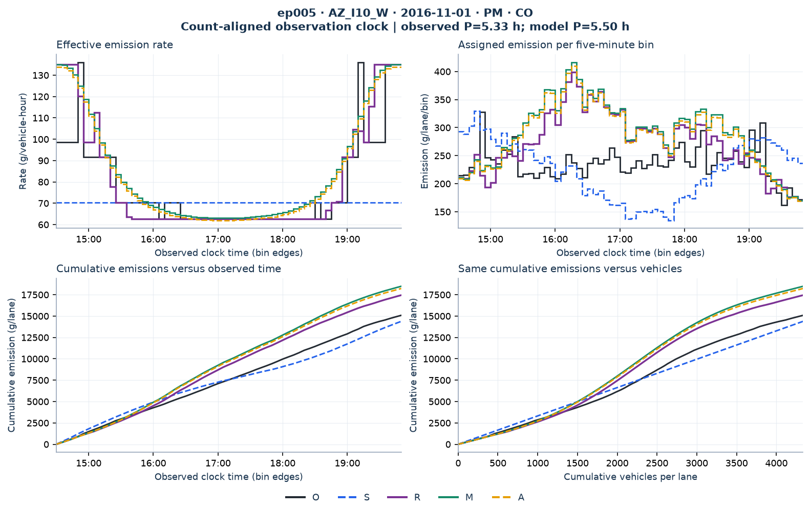

ep005 · AZ_I10_W · 2016-11-01 · PM
state_transition__AZ_I10_W::137__2016-11-01__008
Common-clock diagnostic: model vehicle groups are assigned to recorded five-minute bins by cumulative-count overlap. The fitted duration may differ from the observed duration. These are comparisons with the observed-speed calculation O, not measured vehicle trajectories. Counts, vehicle-hours and emissions are per lane.
- Observed duration
- 5.333 h
- Fitted duration
- 5.499 h
- Volume
- 4334.8 veh/lane
- Length
- 1.295 mi
O: recorded-speed lookup reference · S: single observed average speed · R: reconstructed speed + lookup · M: two speeds + lookup · A: two speeds + cubic rates.
CO: rates, emissions and accumulation
Editable SVG / full-size figure


Evaluation equations
Use the same five-minute bins for profile WAPE, and the final episode sum for total APE.